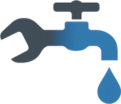

<!doctype html>
<html lang="nl"><head><meta charset="utf-8">
<meta name="viewport" content="width=device-width, initial-scale=1, viewport-fit=cover">
<title>VET Heat – Van Eyen Technics</title>
<link rel="manifest" href="manifest.webmanifest"><meta name="theme-color" content="#1b6a8a"><link rel="apple-touch-icon" href="apple-touch-icon.png"><meta name="apple-mobile-web-app-capable" content="yes"><meta name="mobile-web-app-capable" content="yes"><meta name="apple-mobile-web-app-title" content="VET Heat">
<script src="pdf-lib.min.js"></script>
<script src="attest-engine.js"></script>
<script src="schouw-types.js"></script>
<style>
:root{--bg:#eceff2;--card:#fff;--tx:#14202b;--mu:#617080;--ac:#1b6a8a;--ac2:#e8f2f6;--bd:#d5dbe1;--rd:#c8321c;--ok:#23844a;--wa:#b86a00;--wa2:#fdf1df;box-sizing:border-box;padding-top:env(safe-area-inset-top,0px);padding-bottom:env(safe-area-inset-bottom,0px)}
@media(prefers-color-scheme:dark){:root:not([data-theme="light"]){--bg:#10171d;--card:#19232c;--tx:#e9eef2;--mu:#8e9cab;--ac:#4fb0d3;--ac2:#1d3340;--bd:#2c3945;--rd:#ff6a50;--ok:#4cc27d;--wa:#ffb04a;--wa2:#3a2c17}}
:root[data-theme="dark"]{--bg:#10171d;--card:#19232c;--tx:#e9eef2;--mu:#8e9cab;--ac:#4fb0d3;--ac2:#1d3340;--bd:#2c3945;--rd:#ff6a50;--ok:#4cc27d;--wa:#ffb04a;--wa2:#3a2c17}
*{box-sizing:border-box}html{scroll-padding-top:env(safe-area-inset-top,0px)}
body{margin:0;background:var(--bg);color:var(--tx);font:16px/1.4 system-ui,-apple-system,"Segoe UI",Roboto,sans-serif}
#app{max-width:760px;margin:0 auto;padding:14px}
h1{font-size:26px;margin:6px 0 12px;letter-spacing:-.02em}h2{font-size:15px;margin:0 0 10px;color:var(--mu);font-weight:600}
h3{font-size:14px;margin:14px 0 8px;font-weight:600}
.c{background:var(--card);border:1px solid var(--bd);border-radius:10px;padding:14px;margin-bottom:12px}
input,textarea,select{width:100%;font:inherit;color:inherit;background:var(--bg);border:1px solid var(--bd);border-radius:8px;padding:10px;margin:0 0 8px}
textarea{min-height:70px;resize:vertical}input:focus,textarea:focus,button:focus-visible{outline:2px solid var(--ac);outline-offset:1px}
button{font:inherit;font-weight:600;border:0;border-radius:8px;padding:11px 16px;background:var(--ac);color:#fff;cursor:pointer}
.b2{background:var(--ac2);color:var(--ac)}.red{background:var(--rd);color:#fff}.ok{background:var(--ok)}
.top{display:flex;justify-content:space-between;align-items:center;gap:8px}
.row{display:flex;gap:8px;align-items:center}.row>*{margin-bottom:0}.wrap{flex-wrap:wrap}
.tm{font-size:34px;font-weight:700;font-variant-numeric:tabular-nums;margin:2px 0 10px}
.run .tm{color:var(--rd)}.mu{color:var(--mu);font-size:14px}
.item{display:flex;gap:10px;align-items:center;justify-content:space-between;padding:12px;border:1px solid var(--bd);border-radius:8px;margin-bottom:8px;background:var(--card);cursor:pointer}
.tag{font-size:13px;padding:3px 9px;border-radius:99px;background:var(--ac2);color:var(--ac);white-space:nowrap}.tag.d{background:var(--ok);color:#fff}.tag.r{background:var(--rd);color:#fff}.tag.w{background:var(--wa2);color:var(--wa)}
.ph{display:grid;grid-template-columns:repeat(auto-fill,minmax(130px,1fr));gap:8px;margin-top:8px}
.ph div{position:relative}.ph img{width:100%;aspect-ratio:1;object-fit:cover;border-radius:8px;display:block}
.ph button{position:absolute;top:4px;right:4px;padding:2px 9px;background:rgba(0,0,0,.65)}
#sg,#sg2{width:100%;height:220px;background:#fff;border:1px dashed var(--mu);border-radius:8px;touch-action:none;display:block}
.lg{height:46px;display:block;margin-bottom:6px}.tg{display:flex;gap:8px;flex-wrap:wrap}.tg button{flex:1;min-width:max-content;padding:10px 12px}.tg .on{background:var(--ac);color:#fff}.tg button:not(.on){background:var(--ac2);color:var(--ac)}
.tabs{flex-wrap:nowrap;gap:6px}.tabs button{flex:1 1 0;min-width:0;padding:10px 2px;font-size:14px;white-space:nowrap}
.lk{pointer-events:none;border-style:solid!important}
@media(prefers-color-scheme:dark){:root:not([data-theme="light"]) .lg{filter:brightness(1.8)}}:root[data-theme="dark"] .lg{filter:brightness(1.8)}
.f{display:block}.f>span{display:block;font-size:13px;color:var(--mu);margin:0 0 3px 2px}
.g2{display:grid;grid-template-columns:1fr 1fr;gap:0 8px}.g3{display:grid;grid-template-columns:1fr 1fr 1fr;gap:0 8px}
@media(max-width:480px){.g2.s1{grid-template-columns:1fr}}
.ck{background:var(--ac2);color:var(--ac);font-weight:500;padding:9px 12px;border-radius:8px;text-align:left}.ck.on{background:var(--ac);color:#fff}
.cks{display:flex;flex-wrap:wrap;gap:8px}
.sub{border-top:1px solid var(--bd);margin-top:12px;padding-top:4px}
.mt{width:100%;border-collapse:collapse}.mt td,.mt th{padding:4px 3px;vertical-align:middle}.mt th{font-size:12px;color:var(--mu);font-weight:600;text-align:center}
.mt td:first-child{font-size:14px;line-height:1.2}.mt td:first-child small{display:block;color:var(--mu);font-size:12px}
.mt input{margin:0;padding:8px 4px;text-align:center;min-width:0}.mt td.v{width:21%}
.mt tr+tr td{border-top:1px solid var(--bd)}
.on3{display:flex;gap:6px;margin:2px 0 6px}.on3 button{flex:1;padding:7px 8px;font-size:14px}.on3 .y{background:var(--ok);color:#fff}.on3 .n{background:var(--rd);color:#fff}.on3 button:disabled{opacity:1;cursor:default}.on3 button:not(.y):not(.n){background:var(--ac2);color:var(--ac)}
.chk{display:flex;justify-content:space-between;align-items:center;gap:8px;padding:8px 0;border-top:1px solid var(--bd)}.chk>span{flex:1;font-size:14px;min-width:0;overflow-wrap:anywhere}.chk .on3{margin:0;flex:0 0 150px}.chk .on3 button{padding:8px 4px}
.up{display:inline-block;background:var(--ac2);color:var(--ac);font-weight:600;padding:11px 16px;border-radius:8px;cursor:pointer}
.warn{background:var(--wa2);color:var(--wa);border-radius:8px;padding:10px 12px;font-size:14px;margin-bottom:10px}
.hint{font-size:12px;color:var(--rd);font-weight:600}
details>summary{cursor:pointer}
</style></head><body><div id="app"></div>
<script>
const $=s=>document.querySelector(s);
const esc=s=>String(s??'').replace(/[&<>"]/g,c=>({'&':'&amp;','<':'&lt;','>':'&gt;','"':'&quot;'}[c]));
const CFG0={firma:{naam:'Van Eyen Technics',straat:'Ilfeldlaan 34',pc:'2610 Wilrijk',tel:'0479 68 78 92',email:'info@vaneyentechnics.be',kbo:'BE 1034.973.271'},tech:{naam:'Jordy Van Eyen',gv:'GV32528',tv:''},prefix:'VH',int:{gas:2,vloeibaar:1,vast:1},ink:'blauw',lim:{co:'150',hiB:'88',hiC:'90',trekB:'-3',rook:''},limV:2};
let S={jobs:[],clients:[],seq:0,cfg:JSON.parse(JSON.stringify(CFG0)),tsig:'',bk:0};
let v='list',cur=null,saveT,tab='open',q='',ren=0,pdfK=0;
const db=new Promise(r=>{try{const x=indexedDB.open('vetheat',1);x.onupgradeneeded=()=>x.result.createObjectStore('kv');x.onsuccess=()=>r(x.result);x.onerror=()=>r(null)}catch(e){r(null)}});
async function load(){const d=await db;if(!d){try{const x=localStorage.getItem('vetheat');if(x)S=JSON.parse(x)}catch(e){}return}
 return new Promise(r=>{const x=d.transaction('kv').objectStore('kv').get('s');x.onsuccess=()=>{if(x.result)S=x.result;r()};x.onerror=()=>r()})}
async function save(){const d=await db;if(!d){try{localStorage.setItem('vetheat',JSON.stringify(S))}catch(e){}return}d.transaction('kv','readwrite').objectStore('kv').put(S,'s')}
const sv=()=>{clearTimeout(saveT);saveT=setTimeout(save,300)};
const J=()=>S.jobs.find(j=>j.id==cur);
const dt=d=>d?new Date(d).toLocaleDateString('nl-BE'):'';
const today=()=>{const d=new Date();return new Date(d-d.getTimezoneOffset()*6e4).toISOString().slice(0,10)};
const hhmm=()=>new Date().toLocaleTimeString('nl-BE',{hour:'2-digit',minute:'2-digit'});
const addM=(iso,m)=>{if(!iso)return'';const d=new Date(iso),day=d.getDate();d.setMonth(d.getMonth()+m);if(d.getDate()<day)d.setDate(0);return d.toISOString().slice(0,10)};
const addY=(iso,y)=>{if(!iso)return'';const d=new Date(iso);d.setFullYear(d.getFullYear()+(+y||0));return d.toISOString().slice(0,10)};
const num=s=>parseFloat(String(s??'').replace(',','.'));
const fmt=n=>String(Math.round(n*10)/10).replace('.',',');
function go(x,id){ren=0;pdfK=0;v=x;if(id)cur=id;R();scrollTo(0,0)}

/* ---------- pad-helpers (bv. 'klant.n') ---------- */
const gv=(p,o=J())=>p.split('.').reduce((a,k)=>a==null?a:a[k],o);
function setp(o,p,x){const k=p.split('.'),l=k.pop();let t=o;for(const s of k)t=t[s]??=( {} );t[l]=x}
function set(p,x){setp(J(),p,x);upMiss();sv()}
function tog(p){set(p,!gv(p));R()}
function pickCode(c){const j=J();j.km.code=c;j.km.aansl=c[0];save();R()}
function pickv(p,x){if(p=='verb.werkt')J().verb.autoAfk=0;if(p=='verb.werkt'&&x=='goed'&&rejWhy(J()).length)return alert('Niet mogelijk – afgekeurd: '+rejWhy(J()).join(', ')+'.');set(p,gv(p)==x?'':x);if(p=='km.brandstof')sugDates(1);if(p=='km.aansl')autoOK();if(p.startsWith('verb.'))rejDate();save();R()}
const F=(p,lb,type='text',extra='')=>`<label class="f"><span>${lb}</span><input ${type=='num'?'inputmode="decimal"':`type="${type}"`} value="${esc(gv(p))}" oninput="set('${p}',this.value)" ${extra}></label>`;
const CH=(p,lb)=>`<button class="ck ${gv(p)?'on':''}" onclick="tog('${p}')">${gv(p)?'✓ ':''}${lb}</button>`;
const SEG=(p,opts)=>`<div class="tg">${opts.map(([x,l])=>`<button class="${gv(p)==x?'on':''}" onclick="pickv('${p}','${x}')">${l}</button>`).join('')}</div>`;

/* ---------- onderhoud ---------- */
function blank(){return{id:Date.now().toString(36),nr:'',status:'open',att:{rein:true,verb:true},cid:'',klant:{n:'',straat:'',pc:'',tel:'',mail:''},at:{anders:false,naam:'',straat:'',pc:''},datum:today(),van:'',tot:'',run:0,
 km:{centraal:true,aansl:'',code:'',brandstof:'',gassoort:'',gasAndereTxt:'',branderType:'',vastSoort:'',vastAndereTxt:''},toestel:{merk:'',type:'',bouwjaar:'',serie:'',vermogen:''},brander:{merk:'',type:'',bouwjaar:'',serie:'',debiet:''},
 rol:'erkend',rein:{},verb:{soort:'onderhoud',laag:false,hoog:false,meet:{},tnetMan:{},okNok:{},checks:{},drukPa:'',werkt:'',veilig:''},gebreken:'',maatregelen:'',opm:'',volgT:'',volgK:'',volgV:'',tickP1:[],tickP2:[],fotos:[],sig:'',sigT:0}}
function newJ(cid){const j=blank(),y=new Date().getFullYear();j.nr=(S.cfg.prefix||'VH')+'-'+y+'-'+String(++S.seq).padStart(4,'0');
 const c=cid&&S.clients.find(c=>c.id==cid);if(c)fillFromClient(j,c);S.jobs.unshift(j);save();go('job',j.id)}
function fillFromClient(j,c){j.cid=c.id;j.klant={n:c.n||'',straat:c.straat||'',pc:c.pc||'',tel:c.tel||'',mail:c.mail||''};
 const i=c.inst;if(i){if(i.km)j.km=JSON.parse(JSON.stringify(i.km));if(i.toestel)j.toestel={...i.toestel};if(i.brander)j.brander={...i.brander};if(i.at)j.at={...i.at}}sugDates(1,j)}
function pickClient(x){const j=J(),c=S.clients.find(c=>c.n.trim().toLowerCase()==x.trim().toLowerCase());if(!c)return;
 const emptyDev=!j.toestel.merk&&!j.km.brandstof;j.cid=c.id;['straat','pc','tel','mail'].forEach(k=>{if(!j.klant[k])j.klant[k]=c[k]||''});
 if(emptyDev&&c.inst){if(c.inst.km)j.km=JSON.parse(JSON.stringify(c.inst.km));if(c.inst.toestel)j.toestel={...c.inst.toestel};if(c.inst.brander)j.brander={...c.inst.brander};if(c.inst.at)j.at={...c.inst.at};sugDates(1)}save();R()}
function sugDates(onlyEmpty,j=J()){const y=S.cfg.int[j.km.brandstof]||'';if(y&&j.datum){const d=addY(j.datum,y);for(const k of['volgT','volgK','volgV'])if(!onlyEmpty||!j[k])j[k]=d}rejDate(j)}
/* afgekeurd (niet goed of niet veilig) => volgende verbrandingscontrole binnen 3 maanden (termijn om gebreken te herstellen) */
const isRej=j=>j.verb.werkt=='nietgoed'||j.verb.veilig=='nietveilig';
function rejDate(j=J()){if(!j.datum)return;const r=addM(j.datum,3);
 if(isRej(j)){if(!j.rej){j.volgVprev=j.volgV;j.rej=1}j.volgV=r}
 else if(j.rej){j.rej=0;const y=S.cfg.int[j.km.brandstof];j.volgV=j.volgVprev&&j.volgVprev!=r?j.volgVprev:(y?addY(j.datum,y):'')}
 const e=$('#volgV');if(e&&e.value!=j.volgV)e.value=j.volgV}
function delJ(){if(confirm('Dit onderhoud definitief verwijderen?')){S.jobs=S.jobs.filter(j=>j.id!=cur);save();go('list')}}
function saveRn(){const t=$('#rnm').value.trim();if(t)J().nr=t;ren=0;save();R()}
function clock(){const j=J();if(j.run){j.tot=hhmm();j.run=0}else{j.van=hhmm();j.tot='';j.run=1}save();R()}
function allRein(){const j=J(),b=j.km.brandstof,ks=['vegen','nazicht','terugslag','verluchting','dichtheid'].concat(b=='gas'?['gasOntstoffing','gasBranderbedden','gasVentilator']:b=='vloeibaar'?['olFilters','olKetel','olBrander']:b=='vast'?['vastNazicht','vastReiniging']:[]);
 if(j.km.aansl=='C')ks.splice(ks.indexOf('terugslag'),1);const all=ks.every(k=>j.rein[k]);ks.forEach(k=>j.rein[k]=!all);save();R()}

/* ---------- metingen ---------- */
const FUEL={vloeibaar:'1',gas:'2',vast:'3'};
const ROWS=[['ketelT','Keteltemperatuur','°C','12'],['sproeierMerk','Sproeier: merk en type','','1','t'],['sproeierDebiet','Sproeier: debiet','','1','t'],['sproeierHoek','Sproeier: hoek','graden','1'],['pompdruk','Pompdruk','bar','1'],
 ['gasTeller','Gasdruk teller','mbar','2'],['gasBlok','Gasdruk gasblok','mbar','2'],['gasBranderbed','Gasdruk branderbed','mbar','2'],['rookindex','Rookindex','Bacharach','1'],
 ['o2','Zuurstof O₂','%','12'],['co2','Koolstofdioxide CO₂','%','12'],['co','Koolstofmonoxide CO','mg/kWh','12'],['tg','Rookgastemperatuur tg','°C','12'],['ta','Temp. verbrandingslucht ta','°C','12'],
 ['tnet','Nettotemperatuur tg − ta','°C · automatisch','12'],['hi','Verbrandingsrendement Hi','%','12'],['hs','Verbrandingsrendement Hs','%','12']];
const OKR=['rookindex','co','hi'];
/* verwachte voedingsdruk: sinds eind zomer 2024 is heel België omgeschakeld van arm (L, 25 mbar) naar rijk gas (H, 21 mbar) */
function gasHint(j){const pc=(j.at.anders&&j.at.pc)||j.klant.pc||'',g=(pc.match(/\b\d{4}\b/)||[''])[0],gem=pc.replace(/^\s*\d{4}\s*/,'').trim();
 if(j.km.gassoort=='lpg')return'Verwacht LPG: propaan ± 37 mbar, butaan ± 28–30 mbar (zie ontspanner)';
 if(j.km.gassoort=='andere')return'';
 return'Verwacht: ± 21 mbar – rijk gas (H)'+(gem?' in '+gem:g?' ('+g+')':'')}
const CHECKS=[['olie','Geen zichtbaar oliespoor bij rookindexbepaling','1'],['condens','Geen ongewenste condensvorming in rookgasafvoerkanaal (type B)','12'],['rook','Zelden hinderlijke en milieuverontreinigende rook','3'],
 ['drukRga','Druk rookgasafvoerkanaal','123'],['verluchting','Verluchting en ventilatie stooklokaal','123'],['dichtheidRga','Dichtheid rookgasafvoerkanaal (type C)','12'],['dichtheidGas','Dichtheid brandstoftoevoerleiding (gasmeter tot stooktoestel)','2']];
const fuel=j=>FUEL[j.km.brandstof]||'';
const chkFor=j=>CHECKS.filter(x=>x[2].includes(fuel(j))&&!(x[0]=='condens'&&j.km.aansl=='C')&&!(x[0]=='dichtheidRga'&&j.km.aansl=='B'));
const rowsFor=j=>{const f=fuel(j);return f?ROWS.filter(r=>r[3].includes(f)):[]};
const cols=j=>['p1'].concat(j.verb.laag?['low']:[]).concat(j.verb.hoog?['high']:[]);
function setM(r,c,x){const j=J(),m=j.verb.meet;(m[r]??={})[c]=x;
 if(r=='tnet')j.verb.tnetMan[c]=x!=='';
 if((r=='tg'||r=='ta')&&!j.verb.tnetMan[c]){const a=num(m.tg?.[c]),b=num(m.ta?.[c]);const t=isNaN(a)||isNaN(b)?'':fmt(a-b);(m.tnet??={})[c]=t;const e=$('#m_tnet_'+c);if(e)e.value=t}
 upHint(r);if(OKR.includes(r)){autoOK(j);upOK()}upMiss();sv()}
function setOK(p,x){const j=J(),o=j.verb[p.split('.')[0]],k=p.split('.')[1];if(p.startsWith('okNok.')&&auto(k,j))return;if(p=='checks.drukRga'&&autoDruk(j))return;o[k]=o[k]==x?'':x;save();R()}
/* automatische keuring t.o.v. grenswaarden (CO max, rendement min): null = geen grenswaarde of nog geen meting */
function auto(r,j=J()){const l=limit(r,j);if(!l)return null;const vals=cols(j).map(c=>num(j.verb.meet[r]?.[c])).filter(x=>!isNaN(x));if(!vals.length)return null;
 return (l.max!=null&&Math.max(...vals)>l.max)||(l.min!=null&&Math.min(...vals)<l.min)?'nok':'ok'}
/* type B: trek in het rookgasafvoerkanaal moet minstens 3 Pa onderdruk zijn; een waarde boven -3 Pa (bv. -2, 0 of +1) = afgekeurd */
function autoDruk(j=J()){const l=num(S.cfg.lim.trekB),v=num(j.verb.drukPa);if(j.km.aansl!='B'||isNaN(l)||isNaN(v)||!chkFor(j).some(x=>x[0]=='drukRga'))return null;return v>l?'nok':'ok'}
function autoOK(j=J()){let bad=0;const d=autoDruk(j);if(d){j.verb.checks.drukRga=d;if(d=='nok')bad=1}OKR.forEach(r=>{if(!rowsFor(j).some(x=>x[0]==r))return;const a=auto(r,j);if(a){j.verb.okNok[r]=a;if(a=='nok')bad=1}});/* automatisch afgekeurd => 'niet goed'; zodra alle waarden terug in orde zijn => vorige keuze terug (en dus ook de normale datum) */
 const v=j.verb;if(bad){if(!v.autoAfk){v.werktPrev=v.werkt;v.autoAfk=1}v.werkt='nietgoed'}else if(v.autoAfk){v.autoAfk=0;v.werkt=v.werktPrev=='nietgoed'?'nietgoed':(v.werktPrev||'goed')}
 rejDate(j);return bad}
const OKBTN=(r,j)=>{const a=auto(r,j),v=j.verb.okNok[r];return `<button class="${v=='ok'?'y':''}" ${a?'disabled':''} onclick="setOK('okNok.${r}','ok')">OK</button><button class="${v=='nok'?'n':''}" ${a?'disabled':''} onclick="setOK('okNok.${r}','nok')">${v=='nok'&&a?'Afgekeurd':'Niet OK'}</button>`};
const WERKT=j=>`<div id="werkt"><div class="tg" style="margin-bottom:8px">${[['goed','Goed'],['nietgoed','Niet goed']].map(([x,l])=>`<button class="${j.verb.werkt==x?'on':''}" onclick="pickv('verb.werkt','${x}')">${l}</button>`).join('')}</div>${rejWhy(j).length?'<div class="warn">Afgekeurd: '+rejWhy(j).join(', ')+'. Eindbeoordeling automatisch op "niet goed".</div>':''}</div>`;
const rejWhy=j=>{const L=S.cfg.lim,w=[];if(rowsFor(j).some(x=>x[0]=='co')&&auto('co',j)=='nok')w.push('CO boven '+esc(L.co)+' mg/kWh');if(rowsFor(j).some(x=>x[0]=='hi')&&auto('hi',j)=='nok')w.push('rendement onder '+esc(j.km.aansl=='B'?L.hiB:L.hiC)+' % (type '+j.km.aansl+')');if(rowsFor(j).some(x=>x[0]=='rookindex')&&auto('rookindex',j)=='nok')w.push('rookindex te hoog');if(autoDruk(j)=='nok')w.push('trek type B onvoldoende (boven '+esc(L.trekB)+' Pa)');return w};
function setDruk(x){const j=J();j.verb.drukPa=x;autoOK(j);upOK();upMiss();sv()}
const CHKBTN=(k,j)=>{const a=k=='drukRga'&&autoDruk(j),v=j.verb.checks[k];return `<button class="${v=='ok'?'y':''}" ${a?'disabled':''} onclick="setOK('checks.${k}','ok')">OK</button><button class="${v=='nok'?'n':''}" ${a?'disabled':''} onclick="setOK('checks.${k}','nok')">${v=='nok'&&a?'Afgekeurd':'Niet OK'}</button>`};
function upOK(){const j=J();const c=$('#chk_drukRga');if(c)c.innerHTML=CHKBTN('drukRga',j);OKR.forEach(r=>{const e=$('#ok_'+r);if(e)e.innerHTML=OKBTN(r,j)});const w=$('#werkt');if(w)w.outerHTML=WERKT(j)}
const MISS=j=>{const m=missing(j);return m.length?`<div class="c"><h2>Nog in te vullen (${m.length})</h2><ul class="mu" style="margin:0;padding-left:18px">${m.map(x=>`<li>${esc(x)}</li>`).join('')}</ul></div>`:'<div class="c"><h2 style="color:var(--ok);margin:0">✓ Alles ingevuld</h2></div>'};
let mT;function upMiss(){clearTimeout(mT);mT=setTimeout(()=>{const e=$('#miss'),j=J();if(e&&j)e.innerHTML=MISS(j)},250)}
/* grenswaarden: CO max voor type B en C; rendement Hi min hangt af van type B (88 %) of C (90 %) */
function limit(r,j=J()){const L=S.cfg.lim,t=j.km.aansl;if(r=='co'){const l=num(L.co);return isNaN(l)?null:{max:l}}if(r=='hi'){const l=num(t=='B'?L.hiB:t=='C'?L.hiC:NaN);return isNaN(l)?null:{min:l}}if(r=='rookindex'){const l=num(L.rook);return isNaN(l)?null:{max:l}}return null}
function hint(r,j=J()){const l=limit(r,j);if(!l)return'';const vals=cols(j).map(c=>num(j.verb.meet[r]?.[c])).filter(x=>!isNaN(x));if(!vals.length)return'';
 if(l.max!=null&&Math.max(...vals)>l.max)return'boven grenswaarde '+fmt(l.max);if(l.min!=null&&Math.min(...vals)<l.min)return'onder grenswaarde '+fmt(l.min);return''}
function upHint(r){const e=$('#h_'+r);if(e)e.textContent=hint(r)}

/* ---------- controle ---------- */
function missing(j){const m=[],c=S.cfg,b=j.km.brandstof;
 if(!c.tech.gv&&!c.tech.tv)m.push('Erkenningsnummer (Instellingen)');if(!S.tsig)m.push('Handtekening technicus (Instellingen)');
 if(!j.klant.n)m.push('Naam klant');if(!j.klant.straat||!j.klant.pc)m.push('Adres klant');if(!j.datum)m.push('Datum');if(!j.van||!j.tot)m.push('Arbeidsduur van/tot');
 if(!b)m.push('Brandstof');if(!j.km.aansl)m.push('Aansluiting type B of C');if(b=='gas'&&!j.km.gassoort)m.push('Gassoort');
 if(!j.toestel.merk||!j.toestel.type)m.push('Merk en type toestel');if(!j.toestel.vermogen)m.push('Nominaal vermogen');
 if(j.att.rein){const r=j.rein;if(!Object.keys(r).some(k=>r[k]===true))m.push('Reiniging: niets aangevinkt');if(!j.volgT)m.push('Datum volgende reiniging stooktoestel');if(!j.volgK)m.push('Datum volgende reiniging rookgasafvoerkanaal')}
 if(j.att.verb){const me=j.verb.meet,need=b=='gas'||b=='vloeibaar'?['o2','co2','co','tg','ta','hi']:[];need.forEach(r=>{if(!me[r]?.p1)m.push('Meting Proef I: '+ROWS.find(x=>x[0]==r)[1])});
  if(b=='vloeibaar'&&!me.rookindex?.p1)m.push('Meting: rookindex');
  if((j.verb.laag||j.verb.hoog)&&need.some(r=>cols(j).slice(1).some(c=>!me[r]?.[c])))m.push('Eindmeting niet volledig ingevuld');
  if(need.length&&!j.verb.laag&&!j.verb.hoog)m.push('Eindmeting: laaglast en/of hooglast');
  OKR.filter(r=>rowsFor(j).some(x=>x[0]==r)).forEach(r=>{if(!j.verb.okNok[r])m.push('OK / Niet OK: '+ROWS.find(x=>x[0]==r)[1])});
  chkFor(j).forEach(x=>{if(!j.verb.checks[x[0]])m.push('Controle: '+x[1])});
  if(j.verb.soort=='keuring'){KPUNT.forEach(([x,lb])=>{if(!(j.verb.keur||{})[x])m.push('Keuring: '+lb)});if(!magGebruik(j))m.push('Keuring: mag in gebruik ja/nee')}
  if(!j.verb.werkt||!j.verb.veilig)m.push('Eindbeoordeling goed/veilig');if(!j.volgV)m.push('Datum volgende verbrandingscontrole');
  if(b!='vast'&&!j.tickP1.length)m.push('Foto meetticket Proef I (initiële meting)');if(b!='vast'&&(j.verb.laag||j.verb.hoog)&&!j.tickP2.length)m.push('Foto meetticket Proef II (eindmeting)')}
 if((j.verb.werkt=='nietgoed'||j.verb.veilig=='nietveilig')&&!j.gebreken)m.push('Gebreken invullen (toestel niet goed/niet veilig)');
 if(!j.sig)m.push('Handtekening klant');return m}
function fin(){const j=J(),m=missing(j);if(m.length&&!confirm('Nog niet volledig:\n\n• '+m.join('\n• ')+'\n\nToch afronden?'))return;
 if(j.run){j.tot=hhmm();j.run=0}j.status='afgewerkt';upClient(j);save();R();setTimeout(()=>$('#veka')?.scrollIntoView({behavior:'smooth'}),50)}
function reopen(){J().status='open';save();R()}
function upClient(j){const n=j.klant.n.trim();if(!n)return;let c=S.clients.find(c=>c.id==j.cid)||S.clients.find(c=>c.n.trim().toLowerCase()==n.toLowerCase());
 if(!c){c={id:'c'+Date.now().toString(36),n:'',straat:'',pc:'',tel:'',mail:''};S.clients.push(c)}j.cid=c.id;
 Object.assign(c,{n,straat:j.klant.straat||c.straat,pc:j.klant.pc||c.pc,tel:j.klant.tel||c.tel,mail:j.klant.mail||c.mail});
 c.inst={km:JSON.parse(JSON.stringify(j.km)),toestel:{...j.toestel},brander:{...j.brander},at:{...j.at}}}

/* ---------- foto's ---------- */
function comp(f,max=1400,qq=.75){return new Promise(r=>{const i=new Image,u=URL.createObjectURL(f);i.onload=()=>{const k=Math.min(1,max/Math.max(i.width,i.height)),c=document.createElement('canvas');c.width=i.width*k;c.height=i.height*k;const x=c.getContext('2d');x.fillStyle='#fff';x.fillRect(0,0,c.width,c.height);x.drawImage(i,0,0,c.width,c.height);URL.revokeObjectURL(u);r(c.toDataURL('image/jpeg',qq))};i.onerror=()=>{URL.revokeObjectURL(u);r(null)};i.src=u})}
async function addPh(inp,k){const tk=k.startsWith('tick');for(const f of inp.files){const d=await comp(f,tk?1600:1000,tk?.8:.7);if(d)J()[k].push(d)}inp.value='';save();R()}
function rmPh(k,i){J()[k].splice(i,1);save();R()}
/* twee knoppen: camera rechtstreeks openen, of kiezen uit de galerij */
const UP=k=>`<div class="row wrap"><label class="up">📷 Camera<input type="file" accept="image/*" capture="environment" hidden onchange="addPh(this,'${k}')"></label><label class="up">🖼 Galerij<input type="file" accept="image/*" multiple hidden onchange="addPh(this,'${k}')"></label></div>`;
/* meetwaarden: enkel cijfers en één komma (punt wordt komma); min-teken enkel vooraan waar nodig (trek in Pa, luchttemperatuur) */
function numOnly(el,neg){const o=el.value;let v=o.replace(/\./g,',').replace(neg?/[^0-9,\-]/g:/[^0-9,]/g,'');
 if(neg){const m=v.startsWith('-');v=(m?'-':'')+v.replace(/-/g,'')}const i=v.indexOf(',');if(i>-1)v=v.slice(0,i+1)+v.slice(i+1).replace(/,/g,'');
 if(v!==o){const p=el.selectionStart-(o.length-v.length);el.value=v;try{el.setSelectionRange(p,p)}catch(e){}}}
/* velden met min-teken: toetsenbord met cijfers én symbolen (iPhone-cijferblok heeft geen min-teken) */
const IOS=/iP(hone|ad|od)/.test(navigator.userAgent)||(navigator.platform=='MacIntel'&&navigator.maxTouchPoints>1);
const KBNEG=IOS?'inputmode="text" autocapitalize="off" autocorrect="off" autocomplete="off" spellcheck="false"':'inputmode="decimal"';
const PH=k=>`<div class="ph">${J()[k].map((f,i)=>`<div><button onclick="rmPh('${k}',${i})">✕</button></div>`).join('')}</div>`;

/* ---------- pdf ---------- */
function kmData(j){const k=j.km;return{centraal:k.centraal,typeB:k.aansl=='B',typeC:k.aansl=='C',typeBcode:k.aansl=='B'?k.code:'',typeCcode:k.aansl=='C'?k.code:'',gas:k.brandstof=='gas',aardgas:k.brandstof=='gas'&&k.gassoort=='aardgas',lpg:k.brandstof=='gas'&&k.gassoort=='lpg',gasAndere:k.brandstof=='gas'&&k.gassoort=='andere',gasAndereTxt:k.gasAndereTxt,
 nietPremix:k.brandstof=='gas'&&k.branderType=='nietpremix',premix:k.brandstof=='gas'&&k.branderType=='premix',ventilator:k.brandstof=='gas'&&k.branderType=='ventilator',vloeibaar:k.brandstof=='vloeibaar',vast:k.brandstof=='vast',pellets:k.brandstof=='vast'&&k.vastSoort=='pellets',blokken:k.brandstof=='vast'&&k.vastSoort=='blokken',vastAndere:k.brandstof=='vast'&&k.vastSoort=='andere',vastAndereTxt:k.vastAndereTxt}}
function data(j,kind){const c=S.cfg,cs=cols(j),meet={};rowsFor(j).forEach(([r])=>{const m=j.verb.meet[r];if(m){meet[r]={};cs.forEach(x=>{if(m[x])meet[r][x]=m[x]})}});
 const okNok={},checks={};OKR.forEach(r=>{if(rowsFor(j).some(x=>x[0]==r))okNok[r]=j.verb.okNok[r]});chkFor(j).forEach(x=>{checks[x[0]]=j.verb.checks[x[0]]});
 const rein={};Object.keys(j.rein).forEach(k=>rein[k]=j.rein[k]);
 return{volgnummer:j.nr,soort:j.verb.soort,firma:{naam:c.firma.naam,straat:c.firma.straat,postcode:c.firma.pc,tel:c.firma.tel,email:c.firma.email,kbo:c.firma.kbo},tech:{naam:c.tech.naam,gv:c.tech.gv,tv:c.tech.tv,rol:j.rol},
 datum:j.datum,van:j.van,tot:j.tot,klant:{naam:j.klant.n,straat:j.klant.straat,postcode:j.klant.pc,tel:j.klant.tel,email:j.klant.mail},adresToestel:{anders:j.at.anders,naam:j.at.naam,straat:j.at.straat,postcode:j.at.pc},
 kenmerken:kmData(j),toestel:j.toestel,brander:j.brander,reiniging:rein,gebreken:j.gebreken,maatregelen:j.maatregelen,opmerkingen:j.opm,volgendeToestel:j.volgT,volgendeKanaal:j.volgK,volgende:j.volgV,
 verbranding:{laaglast:j.verb.laag,hooglast:j.verb.hoog,meet,okNok,checks,drukPa:j.verb.drukPa,werkt:j.verb.werkt,veilig:j.verb.veilig},handtekening:{tech:S.tsig,klant:j.sig},
 bijlagen:kind=='verb'?[...j.tickP1.map((d,i,a)=>({titel:'Afdruk meettoestel – Proef I: initiële meting'+(a.length>1?' ('+(i+1)+')':''),data:d})),...j.tickP2.map((d,i,a)=>({titel:'Afdruk meettoestel – Proef II: eindmeting'+[j.verb.laag&&' laaglast',j.verb.hoog&&' hooglast'].filter(Boolean).join(' +')+(a.length>1?' ('+(i+1)+')':''),data:d}))]:[]}}
let LOGO;const logoBytes=async()=>LOGO||(LOGO=await(await fetch('logo.png')).arrayBuffer());
const TPL={};async function tpl(k){if(!TPL[k])TPL[k]=await(await fetch(VETAttest.MAP[k].file)).arrayBuffer();return TPL[k]}
const safe=s=>String(s).replace(/[\\/:*?"<>|]/g,'-');
async function deliver(file){try{if(navigator.canShare?.({files:[file]})){await navigator.share({files:[file]});return 1}}catch(e){if(e.name=='AbortError')return}const a=document.createElement('a');a.href=URL.createObjectURL(file);a.download=file.name;document.body.appendChild(a);a.click();a.remove();return 1}
async function pdf(id,which='beide'){try{const j=id?S.jobs.find(x=>x.id==id):J(),ks=(which=='beide'?['verb','rein']:[which]).filter(k=>j.att[k]);if(!ks.length)return alert('Duid eerst aan welk attest je opmaakt.');
 if(j.km.brandstof=='vloeibaar'&&!S.cfg.tech.tv)return alert('Attesten voor stookolie vereisen een TV-erkenningsnummer (Instellingen).');
 autoOK(j);const parts=[];for(const k of ks)parts.push((await VETAttest.fillAttest(k,data(j,k),await tpl(k),{ink:S.cfg.ink,logo:await logoBytes()})).bytes);
 const ksr=j.att.verb&&j.verb.soort=='keuring'&&ks.includes('verb');if(ksr)parts.unshift(await verslagPdf(j));
 let bytes=parts[0];if(parts.length>1){const L=PDFLib,out=await L.PDFDocument.create();out.setTitle((ksr?'Keuringsrapport ':'Attesten ')+j.nr);const docs=[];for(const p of parts)docs.push(await L.PDFDocument.load(p));
 /* eerst de attesten zelf (verbranding, reiniging), daarna alle bijlagen; het meetticket staat zo helemaal achteraan */
 for(const d of docs)out.addPage((await out.copyPages(d,[0]))[0]);for(const d of [...docs].reverse()){const ix=d.getPageIndices().slice(1);if(ix.length)(await out.copyPages(d,ix)).forEach(pg=>out.addPage(pg))}bytes=await out.save()}
 const nm=safe(j.nr)+(ksr?' Keuringsrapport':ks.length>1?'':ks[0]=='rein'?' Reinigingsattest':' Verbrandingsattest')+'.pdf';await deliver(new File([bytes],nm,{type:'application/pdf'}))}catch(e){alert('PDF maken mislukt: '+e.message)}}

/* ---------- keuring vóór eerste ingebruikname: verslag van de keuring ----------
   Keuringsrapport = verslag van de keuring + verbrandingsattest. Er bestaat geen officieel model voor het verslag;
   wettelijk moet het minstens naam, erkenningsnummer en handtekening van de technicus bevatten en zeggen of het toestel in gebruik mag. */
const KPUNT=[['plaatsing','Toestel geplaatst volgens de voorschriften van de fabrikant'],['afvoer','Rookgasafvoer en luchttoevoer conform het type (B/C) en correct aangesloten'],
 ['ventilatie','Verluchting en ventilatie van het stooklokaal'],['dichtheid','Dichtheid brandstoftoevoerleiding (gasmeter tot stooktoestel)'],['veiligheid','Veiligheidsvoorzieningen werken correct'],
 ['co','Geen risico op CO-vergiftiging vastgesteld'],['verbranding','Verbranding milieuvriendelijk en energiezuinig (zie verbrandingsattest)']];
const kOK=j=>{const k=j.verb.keur||{};return KPUNT.every(([x])=>k[x]=='ok')&&j.verb.werkt=='goed'&&j.verb.veilig=='veilig'};
const magGebruik=j=>{const k=j.verb.keur||{};return k.mag||(KPUNT.some(([x])=>k[x]=='nok')||isRej(j)?'nee':kOK(j)?'ja':'')};
function setK(x,v){const j=J();j.verb.keur=j.verb.keur||{};j.verb.keur[x]=j.verb.keur[x]==v?'':v;save();R()}
async function verslagPdf(j){const L=PDFLib,doc=await L.PDFDocument.create(),f=await doc.embedFont(L.StandardFonts.Helvetica),fb=await doc.embedFont(L.StandardFonts.HelveticaBold);
 const pg=doc.addPage([595.28,841.89]),dk=L.rgb(.1,.12,.15),gr=L.rgb(.42,.45,.5),bl=L.rgb(.1,.42,.54),ink=S.cfg.ink=='zwart'?L.rgb(.05,.05,.05):L.rgb(.05,.16,.48),M=40,W=595.28;let y=800;
 const cl=t=>String(t??'').replace(/[–—]/g,'-').replace(/[^\x20-\x7E\xA0-\xFF€]/g,'');const tx=(t,x,yy,sz=9.5,ft=f,c=dk)=>pg.drawText(cl(t),{x,y:yy,size:sz,font:ft,color:c});
 const line=yy=>pg.drawLine({start:{x:M,y:yy},end:{x:W-M,y:yy},thickness:.6,color:L.rgb(.75,.78,.8)});
 const lg=await doc.embedPng(await logoBytes()),ld=lg.scale(46/lg.width);pg.drawImage(lg,{x:W-M-ld.width,y:y-ld.height+12,width:ld.width,height:ld.height});
 tx('VERSLAG VAN DE KEURING',M,y,15,fb,bl);y-=16;tx('Keuring van een centraal stooktoestel vóór eerste ingebruikname – volgnummer '+j.nr,M,y,9.5,f,gr);y-=12;
 tx('Onderdeel van het keuringsrapport, samen met het bijgevoegde verbrandingsattest.',M,y,8.5,f,gr);y-=14;line(y);y-=16;
 const c=S.cfg,col=(lbl,rows,x)=>{let yy=y;tx(lbl,x,yy,8,fb,gr);yy-=13;rows.filter(r=>r[1]).forEach(([a,b])=>{tx(a,x,yy,8.5,f,gr);tx(b,x+92,yy,9.5,f,ink);yy-=12.5});return yy};
 const y1=col('FIRMA / TECHNICUS',[['Firma',c.firma.naam],['Adres',[c.firma.straat,c.firma.pc].filter(Boolean).join(', ')],['Ondernemingsnr.',c.firma.kbo],['Technicus',c.tech.naam],['Erkenningsnr.',[c.tech.gv,c.tech.tv].filter(Boolean).join(' / ')],['Datum keuring',dt(j.datum)]],M);
 const at=j.at.anders?[j.at.straat,j.at.pc]:[j.klant.straat,j.klant.pc];
 const y2=col('KLANT / INSTALLATIE',[['Klant',j.klant.n],['Adres toestel',at.filter(Boolean).join(', ')],['Toestel',[j.toestel.merk,j.toestel.type].filter(Boolean).join(' ')],['Fabricatienr.',j.toestel.serie],['Vermogen',j.toestel.vermogen?j.toestel.vermogen+' kW':''],['Brandstof / type',[{gas:'Gas',vloeibaar:'Stookolie',vast:'Vaste brandstof'}[j.km.brandstof],j.km.aansl?'type '+j.km.aansl+(j.km.code?' ('+j.km.code+')':''):''].filter(Boolean).join(' – ')]],305);
 y=Math.min(y1,y2)-6;line(y);y-=18;tx('CONTROLEPUNTEN',M,y,8,fb,gr);tx('OK',W-M-70,y,8,fb,gr);tx('NIET OK',W-M-38,y,8,fb,gr);y-=14;
 const k=j.verb.keur||{};const box=(x,yy,on)=>{pg.drawRectangle({x,y:yy-1,width:8,height:8,borderColor:dk,borderWidth:.7});if(on){pg.drawLine({start:{x:x+1,y:yy},end:{x:x+7,y:yy+6},thickness:1.1,color:ink});pg.drawLine({start:{x:x+1,y:yy+6},end:{x:x+7,y:yy},thickness:1.1,color:ink})}};
 KPUNT.forEach(([x,lb])=>{tx(lb,M,y);box(W-M-68,y,k[x]=='ok');box(W-M-30,y,k[x]=='nok');y-=8;line(y);y-=12});
 y-=4;tx('Eindbeoordeling verbrandingsattest: het stooktoestel werkt '+({goed:'goed',nietgoed:'niet goed'}[j.verb.werkt]||'…')+' en '+({veilig:'veilig',nietveilig:'niet veilig'}[j.verb.veilig]||'…')+'.',M,y);y-=22;
 const mg=magGebruik(j);pg.drawRectangle({x:M,y:y-10,width:W-2*M,height:24,color:mg=='nee'?L.rgb(.99,.92,.9):L.rgb(.91,.96,.93)});
 tx('CONCLUSIE: het stooktoestel mag '+(mg=='ja'?'':mg=='nee'?'NIET ':'… ')+'in gebruik genomen worden.',M+8,y-2,11,fb,mg=='nee'?L.rgb(.7,.15,.1):L.rgb(.1,.45,.25));y-=30;
 const wrap=(t,w,sz)=>{const o=[];for(const pa of cl(t).split('\n')){let l='';for(const wd of pa.split(' ')){const u=l?l+' '+wd:wd;if(l&&f.widthOfTextAtSize(u,sz)>w){o.push(l);l=wd}else l=u}o.push(l)}return o};
 if(j.gebreken){tx('Vastgestelde gebreken',M,y,8,fb,gr);y-=13;wrap(j.gebreken,W-2*M,9.5).slice(0,8).forEach(l=>{tx(l,M,y,9.5,f,ink);y-=12})}
 if(mg=='nee'){y-=4;wrap('De gebreken moeten hersteld worden binnen de drie maanden na de datum van dit keuringsrapport; het bewijs is een nieuw keuringsrapport.',W-2*M,8.5).forEach(l=>{tx(l,M,y,8.5,f,gr);y-=11})}
 y=Math.min(y,250)-10;line(y);y-=14;tx('Handtekening erkend technicus',M,y,8,fb,gr);tx('Voor kennisname – klant',305,y,8,fb,gr);
 for(const[d,x]of[[S.tsig,M],[j.sig,305]])if(d){const im=await doc.embedPng(d),z=im.scaleToFit(220,70);pg.drawImage(im,{x,y:y-8-z.height,width:z.width,height:z.height})}
 tx(c.tech.naam,M,y-90,9);tx(j.klant.n,305,y-90,9);
 tx('Keuring met toepassing van het besluit van de Vlaamse Regering van 8 december 2006 (stooktoestellenbesluit). Bij verhuur bezorgt de eigenaar een kopie aan de huurder.',M,40,7,f,gr);
 return await doc.save()}

/* ---------- melding bij VEKA (verplicht binnen 30 dagen na onderhoud of keuring, via melding.veka.vlaanderen.be) ---------- */
const VEKA_URL='https://melding.veka.vlaanderen.be';
const vekaOpen=j=>j.status=='afgewerkt'&&!(j.veka&&j.veka.ok);
const vekaLeft=j=>30-Math.round((new Date(today())-new Date(j.datum))/864e5);
const vekaTag=j=>{if(!vekaOpen(j))return j.veka&&j.veka.ok?'<span class="tag d">VEKA ✓</span>':'';const n=vekaLeft(j);return `<span class="tag ${n<0?'r':n<=7?'w':''}">VEKA ${n<0?'te laat ('+(-n)+' d)':'nog '+n+' d'}</span>`};
function vekaFields(j){const c=S.cfg,k=j.km,at=j.at.anders?j.at:{straat:j.klant.straat,pc:j.klant.pc},pc=(at.pc||'').match(/^\s*(\d{4})\s*(.*)$/)||[];
 const br={gas:'Gas – '+({aardgas:'aardgas',lpg:'LPG',andere:k.gasAndereTxt||'andere'}[k.gassoort]||''),vloeibaar:'Stookolie (vloeibaar)',vast:'Vaste brandstof – '+({pellets:'houtpellets',blokken:'houtblokken',andere:k.vastAndereTxt||'andere'}[k.vastSoort]||'')}[k.brandstof]||'';
 return [['Soort activiteit',j.verb.soort=='keuring'?'Keuring vóór eerste ingebruikname':'Periodiek onderhoud'],['Datum activiteit',dt(j.datum)],
 ['Straat en nummer',at.straat],['Postnummer',pc[1]||''],['Gemeente',pc[2]||at.pc],['Klant',j.klant.n],
 ['Brandstof',br.replace(/ – $/,'')],['Type toestel',k.aansl?'Type '+k.aansl+(k.code?' ('+k.code+')':''):''],['Merk',j.toestel.merk],['Type / model',j.toestel.type],['Fabricatienummer',j.toestel.serie],['Bouwjaar',j.toestel.bouwjaar],['Nominaal vermogen (kW)',j.toestel.vermogen],
 ['Brander merk/type',[j.brander.merk,j.brander.type].filter(Boolean).join(' ')],
 ['Eindbeoordeling',[{goed:'Werkt goed',nietgoed:'Werkt niet goed'}[j.verb.werkt],{veilig:'veilig',nietveilig:'niet veilig'}[j.verb.veilig]].filter(Boolean).join(', ')],
 ['Erkenningsnummer',[c.tech.gv,c.tech.tv].filter(Boolean).join(' / ')],['Volgnummer attest',j.nr]].filter(x=>x[1])}
async function cp(t,el){try{await navigator.clipboard.writeText(t)}catch(e){const a=document.createElement('textarea');a.value=t;document.body.appendChild(a);a.select();document.execCommand('copy');a.remove()}if(el){const o=el.innerHTML;el.innerHTML='✓ gekopieerd';setTimeout(()=>el.innerHTML=o,900)}}
function cpAll(el){cp(vekaFields(J()).map(([a,b])=>a+': '+b).join('\n'),el)}
function vekaSet(ok){const j=J();j.veka={ok,d:ok?today():''};save();R()}
const VEKA=j=>{if(j.status!='afgewerkt')return'';const ok=j.veka&&j.veka.ok,n=vekaLeft(j);
 return `<div class="c" id="veka"><div class="top"><h2 style="margin:0">Melding bij VEKA</h2>${vekaTag(j)}</div>
${ok?`<p style="margin:10px 0">✓ Gemeld op ${dt(j.veka.d)}.</p><button class="b2" onclick="vekaSet(false)">Ongedaan maken</button>`:`
<p class="mu" style="margin:8px 0">Verplicht binnen 30 dagen na het onderhoud (uiterlijk ${dt(new Date(new Date(j.datum).getTime()+30*864e5))}). Tik op een waarde om ze te kopiëren en plak ze in het VEKA-formulier.</p>
<div class="row wrap" style="margin-bottom:10px"><a class="up" style="text-decoration:none;background:var(--ac);color:#fff" href="${VEKA_URL}" target="_blank" rel="noopener">Open VEKA-melding ↗</a><button class="b2" onclick="cpAll(this)">Kopieer alles</button></div>
${vekaFields(j).map(([a,b])=>`<div class="chk" style="cursor:pointer" onclick="cp(${esc(JSON.stringify(b))},this.querySelector('b'))"><span class="mu" style="flex:0 0 40%">${a}</span><b style="font-weight:600;text-align:right;flex:1;overflow-wrap:anywhere">${esc(b)}</b></div>`).join('')}
<p class="mu" style="margin:10px 0">Het attest als bijlage is optioneel. Gebruik de pdf-knop hieronder om het te bewaren of te delen.</p>
<button class="ok" style="width:100%" onclick="vekaSet(true)">✓ Gemeld bij VEKA</button>`}</div>`};

/* ---------- lijsten ---------- */
const due=j=>[j.att.verb&&j.volgV,j.att.rein&&j.volgT,j.att.rein&&j.volgK].filter(Boolean).sort()[0]||'';
const days=d=>Math.round((new Date(d)-new Date(today()))/864e5);
const dueTag=d=>{if(!d)return'';const n=days(d);return n<0?`<span class="tag r">Vervallen ${dt(d)}</span>`:n<=60?`<span class="tag w">Vóór ${dt(d)}</span>`:`<span class="tag">Vóór ${dt(d)}</span>`};
const atts=j=>[j.att.verb&&'Verbranding',j.att.rein&&'Reiniging'].filter(Boolean).join(' + ');
const row=j=>`<div class="item" onclick="go('job','${j.id}')"><div><b>${esc(j.klant.n)||'Zonder klantnaam'}</b><div class="mu">${esc(j.nr)} · ${dt(j.datum)} · ${atts(j)}</div><div class="mu">${esc([j.toestel.merk,j.toestel.type].filter(Boolean).join(' '))}</div></div><div class="row" style="flex-direction:column;align-items:flex-end;gap:6px">${j.run?'<span class="tag r">Loopt</span>':''}${vekaTag(j)}${j.status=='afgewerkt'?`<button class="b2" onclick="event.stopPropagation();pdf('${j.id}')">⬇ PDF</button>`:''}</div></div>`;
const jobsOf=c=>S.jobs.filter(j=>j.cid==c.id||(!j.cid&&j.klant.n.trim().toLowerCase()==c.n.trim().toLowerCase()));
function follow(){return S.clients.map(c=>{const h=jobsOf(c).filter(j=>j.status=='afgewerkt').sort((a,b)=>b.datum.localeCompare(a.datum));return h[0]?{c,j:h[0],d:due(h[0])}:null}).filter(x=>x&&x.d).sort((a,b)=>a.d.localeCompare(b.d))}
function LST(){const k=q.trim().toLowerCase();
 if(tab=='kl'){const a=S.clients.filter(c=>!k||[c.n,c.straat,c.pc,c.tel,c.mail,c.inst?.toestel?.merk].join(' ').toLowerCase().includes(k)).sort((a,b)=>a.n.localeCompare(b.n));return a.map(c=>`<div class="item" onclick="go('cd','${c.id}')"><div><b>${esc(c.n)||'Zonder naam'}</b><div class="mu">${esc([c.straat,c.pc].filter(Boolean).join(', '))}</div></div><span class="tag">${jobsOf(c).length} onderhoud(en)</span></div>`).join('')||'<p class="mu">Nog geen klanten. Ze worden automatisch bewaard (met hun toestel) zodra je een onderhoud afrondt.</p>'}
 if(tab=='op'){const a=follow().filter(x=>!k||[x.c.n,x.c.straat,x.c.pc].join(' ').toLowerCase().includes(k));return a.map(({c,j,d})=>`<div class="item" onclick="go('cd','${c.id}')"><div><b>${esc(c.n)}</b><div class="mu">${esc([c.straat,c.pc].filter(Boolean).join(', '))}</div><div class="mu">Laatste onderhoud ${dt(j.datum)} · ${esc([j.toestel.merk,j.toestel.type].filter(Boolean).join(' '))}</div></div><div style="text-align:right">${dueTag(d)}<br><button class="b2" style="margin-top:6px;padding:6px 10px;white-space:nowrap" onclick="event.stopPropagation();newJ('${c.id}')">+ Onderhoud</button></div></div>`).join('')||'<p class="mu">Nog niets op te volgen. Afgeronde onderhouden met een volgende datum verschijnen hier.</p>'}
 if(tab=='veka'){const a=S.jobs.filter(vekaOpen).sort((a,b)=>a.datum.localeCompare(b.datum));return a.map(row).join('')||'<p class="mu">Alles is gemeld bij VEKA. ✓</p>'}
 if(tab=='open'){const a=S.jobs.filter(j=>j.status!='afgewerkt');return a.map(row).join('')||'<p class="mu">Geen open onderhouden.</p>'}
 const a=S.jobs.filter(j=>j.status=='afgewerkt'&&(!k||[j.nr,j.klant.n,j.klant.straat,j.klant.pc,j.toestel.merk,j.toestel.type,dt(j.datum)].join(' ').toLowerCase().includes(k))).sort((a,b)=>(b.datum+b.nr).localeCompare(a.datum+a.nr));
 let m='';return a.map(j=>{const h=j.datum?new Date(j.datum).toLocaleDateString('nl-BE',{month:'long',year:'numeric'}):'Zonder datum',t=h!=m?`<h2 style="margin-top:12px">${h}</h2>`:'';m=h;return t+row(j)}).join('')||'<p class="mu">Geen afgeronde onderhouden gevonden.</p>'}
const fl=()=>{const e=$('#lst');if(e)e.innerHTML=LST()};
function VL(){const n=S.jobs.filter(j=>j.status=='afgewerkt').length,soon=follow().filter(x=>days(x.d)<=60).length;
 return `<div class="top"><h1>VET Heat</h1><button class="b2" onclick="go('set')">Instellingen</button></div>
<button style="width:100%;margin-bottom:12px;padding:14px" onclick="newJ()">+ Nieuw onderhoud</button>
${S.jobs.length&&(!S.bk||Date.now()-S.bk>12096e5)?`<p class="mu" style="cursor:pointer" onclick="go('set')">⚠ Maak een back-up (Instellingen)${S.bk?' · laatste: '+dt(S.bk):''}</p>`:''}
${(()=>{const v=S.jobs.filter(vekaOpen);if(!v.length)return'';const m=Math.min(...v.map(vekaLeft));return `<div class="warn" style="cursor:pointer;${m<0?'background:var(--rd);color:#fff':''}" onclick="tab='veka';q='';R()">📨 ${v.length} onderhoud${v.length>1?'en':''} nog te melden bij VEKA – ${m<0?'termijn verstreken!':'eerste binnen '+m+' dag'+(m==1?'':'en')} ›</div>`})()}
${tab=='veka'?'<div class="top" style="margin-bottom:8px"><h2 style="margin:0">Nog te melden bij VEKA</h2><button class="b2" onclick="tab=\'af\';R()">Sluiten</button></div>':''}
${!S.tsig?`<div class="warn" style="cursor:pointer" onclick="go('set')">Stel eerst je handtekening en erkenningsnummer in bij Instellingen.</div>`:''}
<div class="tg tabs" style="margin-bottom:12px"><button class="${tab=='open'?'on':''}" onclick="tab='open';q='';R()">Open</button><button class="${tab=='af'?'on':''}" onclick="tab='af';q='';R()">Afgerond (${n})</button><button class="${tab=='op'?'on':''}" onclick="tab='op';q='';R()">Opvolging${soon?` (${soon})`:''}</button><button class="${tab=='kl'?'on':''}" onclick="tab='kl';q='';R()">Klanten</button></div>
${tab!='open'&&tab!='veka'?`<input type="search" placeholder="Zoek op klant, adres, nummer, toestel of datum" value="${esc(q)}" oninput="q=this.value;fl()">`:''}
${tab=='kl'?'<button class="b2" style="width:100%;margin-bottom:10px" onclick="newC()">+ Nieuwe klant</button>':''}<div id="lst">${LST()}</div>`}

/* ---------- klant ---------- */
const C=()=>S.clients.find(c=>c.id==cur);
function newC(){const c={id:'c'+Date.now().toString(36),n:'',straat:'',pc:'',tel:'',mail:''};S.clients.push(c);save();go('cd',c.id)}
function setC(k,x){C()[k]=x;sv()}
function delC(){if(confirm('Deze klant verwijderen? Bestaande onderhouden blijven bewaard.')){S.clients=S.clients.filter(c=>c.id!=cur);save();go('list')}}
function VC(){const c=C(),h=jobsOf(c).sort((a,b)=>b.datum.localeCompare(a.datum)),i=c.inst;
 return `<div class="top"><button class="b2" onclick="go('list')">← Terug</button><button class="red" onclick="delC()">Verwijderen</button></div><h1>Klant</h1>
<div class="c"><label class="f"><span>Voornaam en achternaam</span><input value="${esc(c.n)}" oninput="setC('n',this.value)"></label><label class="f"><span>Straat en nummer</span><input value="${esc(c.straat)}" oninput="setC('straat',this.value)"></label><label class="f"><span>Postnummer en gemeente</span><input value="${esc(c.pc)}" oninput="setC('pc',this.value)"></label>
<div class="g2 s1"><label class="f"><span>Telefoon</span><input type="tel" value="${esc(c.tel)}" oninput="setC('tel',this.value)"></label><label class="f"><span>E-mail</span><input type="email" value="${esc(c.mail)}" oninput="setC('mail',this.value)"></label></div></div>
${i?`<div class="c"><h2>Stooktoestel (laatst gekend)</h2><div>${esc([i.toestel.merk,i.toestel.type].filter(Boolean).join(' '))||'–'}</div><div class="mu">${esc([{gas:'Gas',vloeibaar:'Stookolie',vast:'Vaste brandstof'}[i.km.brandstof],i.km.aansl?'type '+i.km.aansl+(i.km.code?' ('+i.km.code+')':''):'',i.toestel.vermogen?i.toestel.vermogen+' kW':'',i.toestel.bouwjaar].filter(Boolean).join(' · '))}</div><p class="mu" style="margin:6px 0 0">Wordt automatisch ingevuld bij een nieuw onderhoud.</p></div>`:''}
<button style="width:100%;margin-bottom:12px" onclick="newJ('${c.id}')">+ Nieuw onderhoud voor deze klant</button>
<div class="c"><h2>Onderhouden (${h.length})</h2>${h.map(row).join('')||'<p class="mu">Nog geen onderhouden.</p>'}</div>`}

/* ---------- instellingen ---------- */
function setCfg(p,x){setp(S.cfg,p,x);sv()}
const FC=(p,lb,type='text',extra='')=>`<label class="f"><span>${lb}</span><input ${type=='num'?'inputmode="decimal"':`type="${type}"`} value="${esc(p.split('.').reduce((a,k)=>a?.[k],S.cfg))}" oninput="setCfg('${p}',this.value)" ${extra}></label>`;
async function backup(){const f=new File([JSON.stringify(S)],'vetheat-backup-'+today()+'.json',{type:'application/json'});if(await deliver(f)){S.bk=Date.now();save();R()}}
const mergeId=(a,b)=>{const k=new Map(a.map(x=>[x.id,x]));b.forEach(x=>k.set(x.id,x));return[...k.values()]};
async function imp(inp){try{const d=JSON.parse(await inp.files[0].text());
 if(Array.isArray(d.jobs)){S.jobs=mergeId(S.jobs,d.jobs);S.clients=mergeId(S.clients,d.clients||[]);S.seq=Math.max(S.seq,d.seq||0);if(d.tsig&&!S.tsig)S.tsig=d.tsig;if(d.cfg&&!S.jobs.length)S.cfg=d.cfg;await save();alert('Back-up teruggezet.')}
 else if(Array.isArray(d.orders)){let n=0;for(const c of d.clients||[]){if(!c.n||S.clients.some(x=>x.n.trim().toLowerCase()==c.n.trim().toLowerCase()))continue;const m=String(c.adres||'').match(/^(.*?)[,\s]+(\d{4}\s+.+)$/);S.clients.push({id:'c'+Date.now().toString(36)+n,n:c.n,straat:m?m[1].trim():c.adres||'',pc:m?m[2].trim():'',tel:c.tel||'',mail:c.mail||''});n++}
  if(d.tsig&&!S.tsig)S.tsig=d.tsig;await save();alert(n+' klant(en) overgenomen uit de werkbon-app.')}
 else throw 0;go('list')}catch(e){alert('Dit bestand is geen geldige back-up.')}inp.value=''}
function clrT(){S.tsig='';save();sigT()}
function VS(){const c=S.cfg;return `<div class="top"><h1>Instellingen</h1><button class="b2" onclick="go('list')">Klaar</button></div>
<div class="c"><h2>Technicus</h2>${FC('tech.naam','Voornaam en achternaam')}<div class="g2">${FC('tech.gv','Erkenningsnummer GV (gas)')}${FC('tech.tv','Erkenningsnummer TV (stookolie)')}</div>
<p class="mu" style="margin:0">Laat TV leeg zolang je geen erkenning vloeibare brandstof hebt. Attesten voor stookolie worden dan geblokkeerd.</p></div>
<div class="c"><h2>Handtekening technicus</h2><p class="mu">Wordt automatisch op elk attest geplaatst.</p><canvas id="sg2"></canvas><button class="b2" style="margin-top:8px" onclick="clrT()">Wissen</button></div>
<div class="c"><h2>Firma (op het attest)</h2>${FC('firma.naam','Naam')}${FC('firma.straat','Straat en nummer')}${FC('firma.pc','Postnummer en gemeente')}<div class="g2 s1">${FC('firma.tel','Telefoon','tel')}${FC('firma.email','E-mail','email')}</div>${FC('firma.kbo','Ondernemingsnummer')}</div>
<div class="c"><h2>Volgnummer attest</h2><div class="g2">${FC('prefix','Voorvoegsel')}<label class="f"><span>Laatst gebruikt nummer</span><input inputmode="numeric" value="${S.seq}" oninput="S.seq=Math.max(0,parseInt(this.value)||0);sv()"></label></div><p class="mu" style="margin:0">Voorbeeld volgend nummer: ${esc(c.prefix||'VH')}-${new Date().getFullYear()}-${String(S.seq+1).padStart(4,'0')}. Reinigings- en verbrandingsattest van hetzelfde onderhoud krijgen hetzelfde nummer.</p></div>
<div class="c"><h2>Volgende onderhoud voorstellen na</h2><div class="g3">${FC('int.gas','Gas (jaar)','num')}${FC('int.vloeibaar','Stookolie (jaar)','num')}${FC('int.vast','Vaste brandstof (jaar)','num')}</div><p class="mu" style="margin:0">Voor toestellen vanaf 20 kW: gas om de 2 jaar, stookolie elk jaar. Je kunt de datum altijd aanpassen op het onderhoud.</p></div>
<div class="c"><h2>Grenswaarden</h2><p class="mu">Valt een gemeten waarde (Proef I, laaglast of hooglast) of de trek van een type B buiten deze grenzen, dan zet de app die rij automatisch op Niet OK (afgekeurd) en de eindbeoordeling op "niet goed". Binnen de grenzen wordt de rij automatisch OK. Laat een veld leeg om dit uit te schakelen.</p>
<div class="g2">${FC('lim.co','CO max type B en C (mg/kWh)','num')}${FC('lim.trekB','Trek type B: afgekeurd boven (Pa)','num')}${FC('lim.hiC','Rendement Hi min type C (%)','num')}${FC('lim.hiB','Rendement Hi min type B (%)','num')}${FC('lim.rook','Rookindex max (Bacharach)','num')}</div></div>
<div class="c"><h2>Inktkleur op het attest</h2><div class="tg"><button class="${c.ink!='zwart'?'on':''}" onclick="S.cfg.ink='blauw';save();R()">Blauw</button><button class="${c.ink=='zwart'?'on':''}" onclick="S.cfg.ink='zwart';save();R()">Zwart</button></div></div>
<div class="c"><h2>Back-up</h2><p class="mu">Je gegevens staan enkel op dit toestel. Maak regelmatig een back-up: je moet een kopie van elk attest minstens 1 jaar bewaren.${S.bk?' Laatste: '+dt(S.bk)+'.':''}</p><div class="row wrap"><button onclick="backup()">Back-up maken</button><label class="b2" style="padding:11px 16px;border-radius:8px;font-weight:600;cursor:pointer">Terugzetten<input type="file" accept=".json,application/json" hidden onchange="imp(this)"></label></div>
<p class="mu" style="margin:10px 0 0">Tip: kies bij Terugzetten een back-up van de werkbon-app om je klanten (en handtekening) over te nemen.</p></div>
<p class="mu">Attesten volgens het model van het besluit van de Vlaamse Regering van 8 december 2006. Het officiële model blijft ongewijzigd; je gegevens worden erop ingevuld.</p>`}

/* ---------- onderhoud-scherm ---------- */
function VJ(){const j=J(),done=j.status=='afgewerkt',b=j.km.brandstof,f=fuel(j),rs=rowsFor(j),cs=cols(j),miss=missing(j);
 const oilBlocked=b=='vloeibaar'&&!S.cfg.tech.tv;
 const RC=(k,lb)=>CH('rein.'+k,lb);
 return `<div class="top"><button class="b2" onclick="go('list')">← Terug</button><span class="tag ${done?'d':''}">${done?'Afgewerkt':'Open'}</span></div>
${ren?`<div class="row" style="margin:6px 0 12px"><input id="rnm" value="${esc(j.nr)}" onkeydown="if(event.key=='Enter')saveRn()"><button onclick="saveRn()">Opslaan</button><button class="b2" onclick="ren=0;R()">✕</button></div>`:`<h1>${esc(j.nr)} <button class="b2" style="padding:2px 9px;font-size:15px;vertical-align:middle" onclick="ren=1;R();$('#rnm').focus()">✎</button></h1>`}<div class="mu" style="margin:-8px 0 12px">Volgnummer attest</div>

<div class="c"><h2>Attesten</h2><div class="cks">${CH('att.verb','Verbrandingsattest')}${CH('att.rein','Reinigingsattest')}</div></div>

<div class="c"><h2>Klant</h2>
<label class="f"><span>Voornaam en achternaam</span><input list="kl" value="${esc(j.klant.n)}" oninput="set('klant.n',this.value)" onchange="pickClient(this.value)"></label><datalist id="kl">${S.clients.map(c=>`<option value="${esc(c.n)}">`).join('')}</datalist>
${F('klant.straat','Straat en nummer')}${F('klant.pc','Postnummer en gemeente')}<div class="g2 s1">${F('klant.tel','Telefoon','tel')}${F('klant.mail','E-mail','email')}</div>
<div class="cks">${CH('at.anders','Stooktoestel op een ander adres')}</div>
${j.at.anders?`<div class="sub">${F('at.naam','Naam / gebouw (optioneel)')}${F('at.straat','Straat en nummer')}${F('at.pc','Postnummer en gemeente')}</div>`:''}</div>

<div class="c ${j.run?'run':''}"><h2>Datum en arbeidsduur</h2>${F('datum','Datum onderhoud','date',`onchange="sugDates(1);save();R()"`)}
<div class="g2">${F('van','Van','time')}${F('tot','Tot','time')}</div>${done?'':`<button class="${j.run?'red':''}" onclick="clock()">${j.run?'■ Stop (tot = nu)':'▶ Start (van = nu)'}</button>`}</div>

<div class="c"><h2>Kenmerken van het stooktoestel</h2>${oilBlocked?'<div class="warn">Geen TV-erkenningsnummer ingesteld. Attesten voor stookolie mag enkel een erkend technicus vloeibare brandstof opmaken; de pdf wordt geblokkeerd.</div>':''}
<div class="cks" style="margin-bottom:10px">${CH('km.centraal','Centraal stooktoestel')}</div>
<h3>Aansluiting (NBN CR 1749)</h3>${SEG('km.aansl',[['B','Type B (open)'],['C','Type C (gesloten)']])}
<button class="b2" style="margin-top:8px;width:100%" onclick="SCHOUW.show(J().km.aansl,pickCode)">📖 Overzicht schouwaansluitingen (met tekening)</button>
${j.km.aansl?`<div class="cks" style="margin-top:8px">${SCHOUW.codes(j.km.aansl).map(c=>`<button class="ck ${j.km.code==c?'on':''}" onclick="pickCode('${c}')">${c}</button>`).join('')}</div><div style="margin-top:8px">${F('km.code','Exacte indeling (of zelf invullen)')}</div>`:''}
<h3>Brandstof</h3>${SEG('km.brandstof',[['gas','Gas'],['vloeibaar','Stookolie'],['vast','Vast']])}
${b=='gas'?`<h3>Gas</h3>${SEG('km.gassoort',[['aardgas','Aardgas'],['lpg','LPG'],['andere','Andere']])}${j.km.gassoort=='andere'?`<div style="margin-top:8px">${F('km.gasAndereTxt','Andere, namelijk')}</div>`:''}
<h3>Brander</h3>${SEG('km.branderType',[['nietpremix','Niet-premix (GI)'],['premix','Premix (GI)'],['ventilator','Ventilatorbrander (GII)']])}`:''}
${b=='vast'?`<h3>Vaste brandstof</h3>${SEG('km.vastSoort',[['pellets','Houtpellets'],['blokken','Houtblokken'],['andere','Andere']])}${j.km.vastSoort=='andere'?`<div style="margin-top:8px">${F('km.vastAndereTxt','Andere, namelijk')}</div>`:''}`:''}
<h3>Toestel</h3><div class="g2 s1">${F('toestel.merk','Merk')}${F('toestel.type','Type')}${F('toestel.bouwjaar','Bouwjaar','num')}${F('toestel.vermogen','Nominaal vermogen (kW)','num')}</div>${F('toestel.serie','Fabricatienummer')}
<details ${b=='vloeibaar'||j.brander.merk?'open':''}><summary class="mu">Brander (enkel CV, bv. stookolie of ventilatorbrander)</summary><div style="margin-top:8px"><div class="g2 s1">${F('brander.merk','Merk')}${F('brander.type','Type')}${F('brander.bouwjaar','Bouwjaar','num')}${F('brander.serie','Fabricatienummer')}</div>${F('brander.debiet','Debiet (kW of kg/h of l/h of m³/h)')}</div></details></div>

${j.att.rein?`<div class="c"><div class="top"><h2 style="margin:0">Reinigingsattest</h2><button class="b2" style="padding:6px 10px;font-size:14px" onclick="allRein()">Alles aanvinken</button></div>
<h3>Uitgevoerd door</h3>${SEG('rol',[['erkend','Erkend technicus'],['schoorsteenveger','Schoorsteenveger']])}
<h3>Rookgasafvoerkanaal</h3><div class="cks">${RC('vegen','Vegen rookgasafvoerkanaal en verbindingsstukken')}${RC('nazicht','Nazicht van de goede werking')}${RC('terugslag','Controle terugslag met terugslagmelder')}</div>
<h3>Stooktoestel – alle toestellen</h3><div class="cks">${RC('verluchting','Controle verluchting stooklokaal')}${RC('dichtheid','Controle rookgaszijdige dichtheid')}${RC('andere','Andere')}</div>${j.rein.andere?`<div style="margin-top:8px">${F('rein.andereTxt','Andere, namelijk')}</div>`:''}
${b=='gas'?`<h3>Gasvormige brandstof</h3><div class="cks">${RC('gasOntstoffing','Ontstoffing')}${RC('gasBranderbedden','Reiniging branderbedden en warmtewisselaar (GI) / ketel (GII)')}${RC('gasVentilator','Reiniging ventilator en brander')}</div>`:''}
${b=='vloeibaar'?`<h3>Vloeibare brandstof</h3><div class="cks">${RC('olFilters','Reiniging filters')}${RC('olKetel','Reiniging ketel')}${RC('olBrander','Reiniging brander')}</div>`:''}
${b=='vast'?`<h3>Vaste brandstof</h3><div class="cks">${RC('vastNazicht','Nazicht algemene staat')}${RC('vastReiniging','Reiniging inwendige delen warmtebron')}</div>`:''}
${!b?'<p class="mu">Kies eerst de brandstof voor de specifieke reinigingspunten.</p>':''}
<h3>Eerstvolgende reiniging vóór</h3><div class="g2">${F('volgT','Stooktoestel','date')}${F('volgK','Rookgasafvoerkanaal','date')}</div></div>`:''}

${j.att.verb?`<div class="c"><h2>Verbrandingsattest</h2>
${SEG('verb.soort',[['onderhoud','Onderhoud'],['keuring','Keuring eerste ingebruikname']])}
${!b?'<p class="mu" style="margin-top:12px">Kies eerst de brandstof: dan verschijnen enkel de metingen die erbij horen.</p>':`
<h3>Goede staat van werking</h3><p class="mu" style="margin:-4px 0 8px">Proef I = initiële meting. Proef II = eindmeting: duid aan welke meetreeksen.</p>
${rs.length?`<div class="cks" style="margin-bottom:8px">${CH('verb.laag','Proef II laaglast')}${CH('verb.hoog','Proef II hooglast')}</div>
<table class="mt"><tr><th></th><th>Proef I</th>${j.verb.laag?'<th>Laag</th>':''}${j.verb.hoog?'<th>Hoog</th>':''}</tr>
${rs.map(([r,lb,u,,t])=>`<tr><td>${lb}<small>${u}${r=='gasTeller'?'<br><span style="color:var(--ac)">'+gasHint(j)+'</span>':''}${OKR.includes(r)?` <span class="hint" id="h_${r}">${hint(r,j)}</span>`:''}</small></td>${cs.map(c=>`<td class="v"><input id="m_${r}_${c}" ${t?'':r=='ta'?KBNEG:'inputmode="decimal"'} value="${esc(j.verb.meet[r]?.[c]??'')}" oninput="${t?'':'numOnly(this,'+(r=='ta'?1:0)+');'}setM('${r}','${c}',this.value)"></td>`).join('')}</tr>
${OKR.includes(r)?`<tr class="nb"><td colspan="${cs.length+1}" style="border-top:0;padding-top:0"><div class="on3" id="ok_${r}">${OKBTN(r,j)}</div></td></tr>`:''}`).join('')}</table>`:'<p class="mu">Voor vaste brandstof staan geen meetwaarden op het attest.</p>'}
<h3>Controles</h3>${chkFor(j).map(([k,lb])=>`<div class="chk"><span>${lb}${k=='drukRga'?`<input id="drukPa" ${KBNEG} placeholder="bv. -5" style="width:110px;margin:6px 0 0;display:block" value="${esc(j.verb.drukPa)}" oninput="numOnly(this,1);setDruk(this.value)">${j.km.aansl=='B'?'<small class="mu" style="display:block">Type B: min. 3 Pa trek (onderdruk), bv. -5. Boven '+esc(S.cfg.lim.trekB)+' Pa = afgekeurd.</small>':''}`:''}</span><div class="on3" id="chk_${k}">${CHKBTN(k,j)}</div></div>`).join('')}
<h3>Eindbeoordeling – het stooktoestel werkt</h3>${WERKT(j)}
<div class="tg">${[['veilig','Veilig'],['nietveilig','Niet veilig']].map(([x,l])=>`<button class="${j.verb.veilig==x?'on':''}" onclick="pickv('verb.veilig','${x}')">${l}</button>`).join('')}</div>
${j.verb.werkt=='nietgoed'||j.verb.veilig=='nietveilig'?'<div class="warn" style="margin-top:10px">Gebreken moeten binnen 3 maanden hersteld worden, met een nieuw attest als bewijs. De volgende verbrandingscontrole is automatisch op +3 maanden gezet. Vul de gebreken hieronder in en laat de klant tekenen.</div>':''}
${j.verb.soort=='keuring'?`<div class="sub"><h3>Verslag van de keuring (keuringsrapport)</h3><p class="mu" style="margin:-4px 0 8px">Wordt vooraan in de pdf geplaatst, samen met het verbrandingsattest = keuringsrapport.</p>
${KPUNT.map(([x,lb])=>`<div class="chk"><span>${lb}</span><div class="on3"><button class="${(j.verb.keur||{})[x]=='ok'?'y':''}" onclick="setK('${x}','ok')">OK</button><button class="${(j.verb.keur||{})[x]=='nok'?'n':''}" onclick="setK('${x}','nok')">Niet OK</button></div></div>`).join('')}
<h3>Het toestel mag in gebruik genomen worden</h3><div class="tg">${[['ja','Ja'],['nee','Nee']].map(([x,l])=>`<button class="${magGebruik(j)==x?'on':''}" onclick="setK('mag','${x}')">${l}${!(j.verb.keur||{}).mag&&magGebruik(j)==x?' (auto)':''}</button>`).join('')}</div></div>`:''}
<h3>Eerstvolgende verbrandingscontrole vóór</h3>${F('volgV','Datum','date','id="volgV"')}${isRej(j)?'<p class="hint" style="margin:-4px 0 8px">Afgekeurd: automatisch op datum onderhoud + 3 maanden gezet (wettelijke hersteltermijn).</p>':''}
${b!='vast'?`<h3>Afdruk(ken) meettoestel</h3><p class="mu" style="margin:-4px 0 8px">Verplicht bij het attest. De foto's komen als laatste bijlage in de pdf, apart per proef.</p>
<div class="sub" style="border:0;margin-top:0;padding-top:0"><b style="font-size:14px">Proef I – initiële meting</b><div style="margin-top:6px">${UP('tickP1')}</div>${PH('tickP1')}</div>
<div class="sub"><b style="font-size:14px">Proef II – eindmeting${j.verb.laag||j.verb.hoog?' ('+[j.verb.laag&&'laaglast',j.verb.hoog&&'hooglast'].filter(Boolean).join(' + ')+')':''}</b><div style="margin-top:6px">${UP('tickP2')}</div>${PH('tickP2')}</div>`:''}`}</div>`:''}

<div class="c"><h2>Gebreken en maatregelen</h2>
<label class="f"><span>Gebreken die niet door de onderhouds-/reinigingsbeurt kunnen worden weggewerkt</span><textarea oninput="set('gebreken',this.value)">${esc(j.gebreken)}</textarea></label>
${j.att.rein?`<label class="f"><span>Te treffen maatregelen om deze gebreken weg te werken (reinigingsattest)</span><textarea oninput="set('maatregelen',this.value)">${esc(j.maatregelen)}</textarea></label>`:''}
<label class="f"><span>Andere opmerkingen</span><textarea oninput="set('opm',this.value)">${esc(j.opm)}</textarea></label>
<p class="mu" style="margin:0">Te lange tekst komt volledig in een bijlage achter het attest.</p></div>

<div class="c"><h2>Foto's installatie</h2><p class="mu" style="margin:-4px 0 8px">Enkel voor je eigen dossier, niet op het attest.</p>${UP('fotos')}${PH('fotos')}</div>

<div class="c"><h2>Handtekening klant – voor kennisname</h2>${!S.tsig?'<div class="warn">Je eigen handtekening ontbreekt nog: stel ze in bij Instellingen.</div>':''}<canvas id="sg"></canvas><button class="b2" style="margin-top:8px" onclick="clrSig()">Wissen</button></div>

<div id="miss">${MISS(j)}</div>

${VEKA(j)}
<div class="row wrap" style="margin-bottom:12px">${done?'<button class="b2" onclick="reopen()">Heropenen</button>':'<button class="ok" onclick="fin()">Onderhoud afronden</button>'}${j.att.rein&&j.att.verb?`<button onclick="pdfK=!pdfK;R();scrollTo(0,document.body.scrollHeight)">PDF ▾</button>`:`<button onclick="pdf()">Exporteer als pdf</button>`}<button class="red" onclick="delJ()">Verwijderen</button></div>
${pdfK?`<div class="c"><h2>PDF exporteren</h2><div class="row wrap"><button onclick="pdf(0,'beide')">Beide attesten</button><button class="b2" onclick="pdf(0,'verb')">Verbrandingsattest</button><button class="b2" onclick="pdf(0,'rein')">Reinigingsattest</button></div></div>`:''}<div style="height:24px"></div>`}

/* ---------- handtekening ---------- */
function initSig(id,get,set_){const c=$('#'+id);if(!c)return;const d=devicePixelRatio||1,w=c.clientWidth,h=220;c.width=w*d;c.height=h*d;const x=c.getContext('2d');x.scale(d,d);x.lineWidth=2.4;x.lineCap='round';x.lineJoin='round';x.strokeStyle='#111';
 const lock=()=>c.classList.add('lk');c.classList.remove('lk');
 if(get()){const i=new Image;i.onload=()=>x.drawImage(i,0,0,w,h);i.src=get();lock()}
 let dr=0,tm;const p=e=>{const r=c.getBoundingClientRect();return[e.clientX-r.left,e.clientY-r.top]};
 c.onpointerdown=e=>{clearTimeout(tm);dr=1;c.setPointerCapture(e.pointerId);x.beginPath();x.moveTo(...p(e));e.preventDefault()};
 c.onpointermove=e=>{if(dr){x.lineTo(...p(e));x.stroke()}};
 c.onpointerup=c.onpointercancel=()=>{if(dr){dr=0;set_(c.toDataURL('image/png'));tm=setTimeout(lock,1200)}}}
function clrSig(){J().sig='';J().sigT=0;save();sigO()}
const sigO=()=>initSig('sg',()=>J().sig,x=>{J().sig=x;J().sigT=Date.now();upMiss();sv()});
const sigT=()=>initSig('sg2',()=>S.tsig,x=>{S.tsig=x;sv()});

function R(){$('#app').innerHTML=v=='list'?VL():v=='set'?VS():v=='cd'?VC():VJ();if(v=='job')sigO();if(v=='set')sigT()}
if('serviceWorker' in navigator){const had=!!navigator.serviceWorker.controller;navigator.serviceWorker.register('sw.js',{updateViaCache:'none'}).then(r=>r.update()).catch(()=>{});
 /* nieuwe versie actief: één keer herladen zodat je meteen de laatste versie gebruikt */
 navigator.serviceWorker.addEventListener('controllerchange',()=>{if(had&&!window._rl){window._rl=1;location.reload()}})}
navigator.storage?.persist?.();
load().then(()=>{S.clients=S.clients||[];S.jobs=S.jobs||[];S.jobs.forEach(j=>{if(j.tickets){j.tickP1=(j.tickP1||[]).concat(j.tickets);delete j.tickets}j.tickP1=j.tickP1||[];j.tickP2=j.tickP2||[]});S.cfg=Object.assign(JSON.parse(JSON.stringify(CFG0)),S.cfg||{});if((S.cfg.limV||0)<2){S.cfg.lim={co:'150',hiB:'88',hiC:'90',trekB:'-3',rook:S.cfg.lim?.rook||''};S.cfg.limV=2;save()}R()});
</script></body></html>
